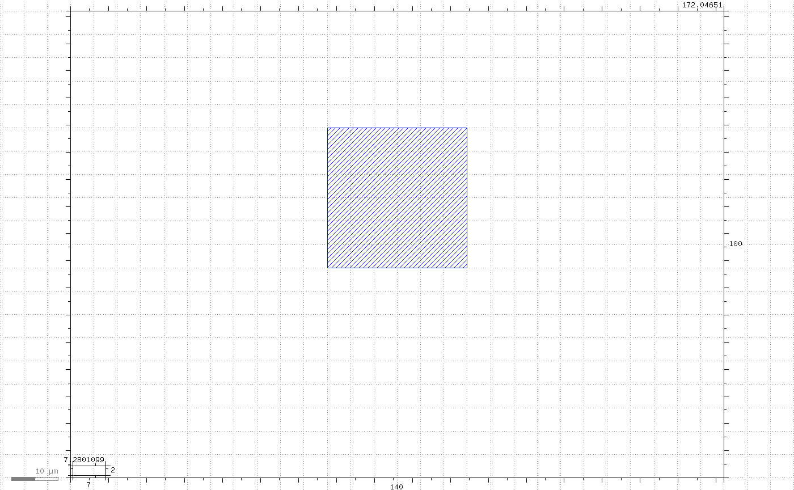
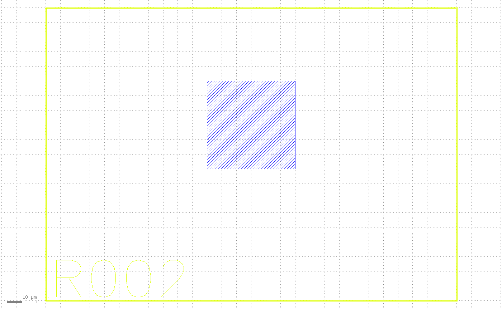
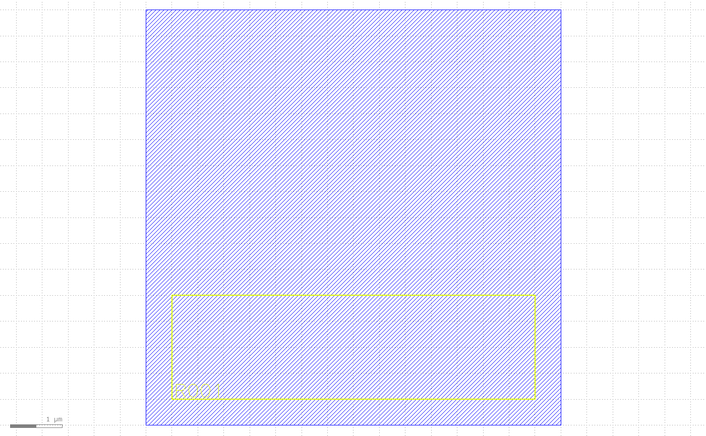
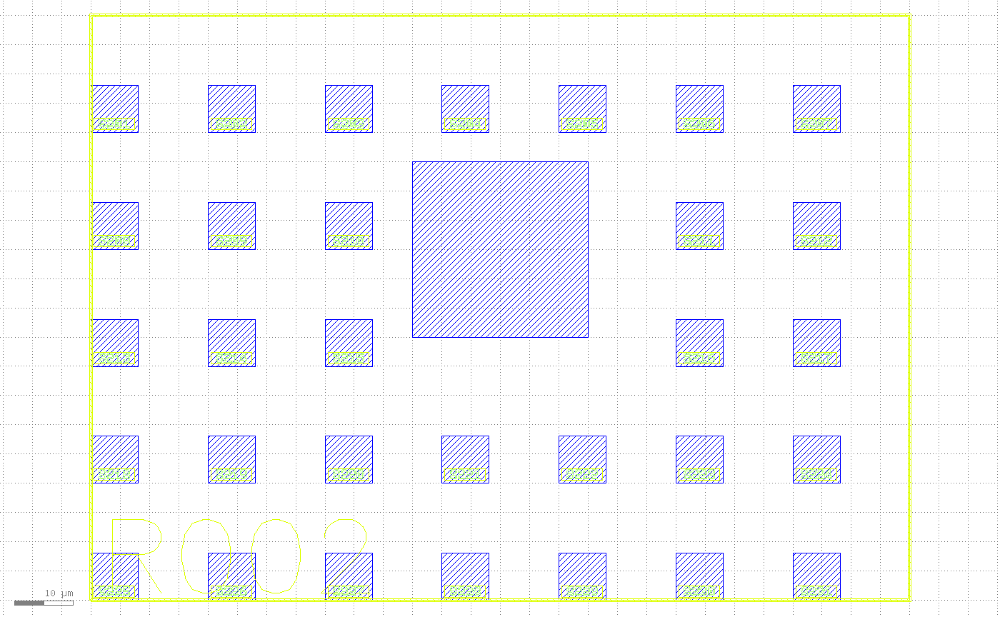

这是什么
一次性画完整个版图之外，还有一类常见需求：先圈出一块要用的区域，再往里面铺一个东西的很多份，每份都要能被唯一识别——传感器阵列上的一格格 site、晶圆上的 die、测试结构矩阵。layoutintent 域（klink 0.5.0 新增）把这条流程拆成四步，每一步都是显式的 RPC 调用：
拖标尺圈一块区域 (KLayout 自带的标尺工具：box / ellipse)
-> region.claim 标尺合并成一个 Region 标记 PCell
-> intent.prepare 分析 + 规划 + 校验（不写入任何东西）
-> intent.apply 一次事务，一次 Ctrl+Z
-> intent.regenerate 改编号 / 间距，原子替换输出这篇教程走两个可跑 demo：region_claim_fill.py（认领区域 + 铺 fill，不涉及编号）和 region_array_labeled.py（完整的 hero 流程：认领 → 规划预览 → 应用 → 重新生成）。两份脚本的层号、尺寸、间距都是脚本自己声明的示例数据——klink 本身不带任何一个数字。
随 wheel 打包进模板的可跑 starter 是 example_template/layout_intent/region_numbered_array.py（模板新增）：它把上面这条完整流程——建场景、圈编号槽、圈目标区域、intent.prepare、intent.apply、intent.regenerate——合并进一个脚本，python example_template/layout_intent/region_numbered_array.py --port <端口> 就能重跑；本篇下面的截图正是重放这个 starter 拿到的。
前置条件
- 安装 klink：
pip install klayout-klink。 - 需要一个 live 的 KLayout 会话（装了 klink 插件、8765 端口在监听）——这条链路不是离线的：
region.claim/intent.*都是插件侧 RPC，直接改动 live 版图。不需要额外的可选依赖（不需要 gdsfactory、numpy、bpy 之类）。
KLinkClient().connect() 直接连默认 session（8765），不带 --port 参数。用空的或测试专用窗口，不要用你手工的工作 tab——脚本一开始会先删除同名的旧 demo cell 再重建。1认领 Region
一个 Region 是一块已认领的区域：保留标记层（默认 999/10，可用 region.set_layer 配置）上的一个 klink_Region PCell。它活在你的版图里——随 GDS 一起走、重启后还在，也能像其它对象一样被点击 + SEND 给 agent。标尺只是输入手势：认领成功会消耗掉用到的标尺（撤销会同时带回标尺和认领前的状态）。
一次认领可以组合多把标尺，各带三种角色之一：
| 角色 | 含义 | 例子 |
|---|---|---|
include | 并集（默认） | 两个 box → L 形 |
clip | 交集 | 椭圆 ∩ box → 半圆 |
exclude | 差集（挖出的洞永不可写） | 圆 − 圆 → 圆环 |
椭圆的离散化是保守的：include/clip 用内切多边形，exclude 用外切——可写区域只会缩小，绝不会超出你画的范围。结果必须是一个连通分量；不连通的孤岛会被拒绝，并把各自的 bbox 报回来，方便你分开认领。
region_claim_fill.py 画一个大 box 当 include，再用一个椭圆当 exclude 在角上咬一口——这就是标尺工具在真实使用中拖出来的两种形状，脚本里用 annotation.insert 程序化地画出来，方便离线重复跑：
include = c.call("annotation.insert", {
"points_um": [[0, 0], [200, 140]],
"outline": "box",
"category": "klink_demo_region",
})["ruler"]["id"]
exclude = c.call("annotation.insert", {
"points_um": [[140, 80], [220, 160]],
"outline": "ellipse",
"category": "klink_demo_region",
})["ruler"]["id"]
claimed = c.call("region.claim", {
"cell": "REGION_DEMO",
"layer": "999/10",
"rulers": [
{"id": include, "role": "include"},
{"id": exclude, "role": "exclude"},
],
})
# claimed["name"], claimed["klink_id"], claimed["area_um2"] == 24810.9认领之后，Region 本身就有用——不必接下一步的生成流程：
region.get返回多边形——把hull_um喂给cell.fill_regionregion.occupancy报告区域内部有什么：逐层障碍物、命名的障碍 cell、空闲面积view.zoom_box用bbox_um导航过去
region_claim_fill.py 接下来就是最简单的用法——不铺编号阵列，只把 Region 的多边形喂给 cell.fill_region 铺一遍 demo cell：
got = c.call("region.get", {"name": claimed["name"]})
filled = c.call("cell.fill_region", {
"cell": "REGION_DEMO",
"fill_cell": "REGION_DEMO_SENSOR",
"polygons_um": [got["hull_um"]],
"exclude_layers": ["10/0"],
})
# filled["placed"] == 308, filled["remaining_area_um2"] == 2098.9实测输出：认领面积 24810.9 µm²，铺出 308 块 fill tile，remaining_area_um2 2098.9（贴边贴不满的剩余面积——只有完全落在区域内部的 tile 才会被放置；placed × footprint 面积 + remaining == region 面积 自洽）。
2规划与应用：编号阵列
intent.prepare 在一个 Region 里规划任意已有 cell 的间距网格，每个副本都带唯一的物理编号标签（真实多边形文字，预览与最终应用效果完全一致）。在你用 intent.apply 确认之前不会写入任何东西。
一切都是显式的——klink 不带任何工艺默认值：
- 障碍物由你声明：
obstacle_layers（你的设计层）、obstacle_cells（命名的器件/blackbox cell——每个实例出现都按 bbox 计入）、extra_obstacles_um（自由形式多边形），加上clearance_um。什么都不声明需要显式传allow_empty_obstacles: true。 - 是实例，不是多边形：阵列出来的是你 cell 的一个实例，支持
rotation_deg（0/90/180/270）和mirror。 - 标签有两种模式：
- offset：
{layer, height_um, offset_um}，相对每个 footprint 中心的偏移； - slot（推荐）：在单元 cell 内部圈一小块区域，表示"编号写在这里"，然后传
{layer, slot_region: "R00X"}。每个副本的编号都会自动适配字号、精确嵌进自己的 slot；slot 会跟着实例一起移动、旋转。拖动 slot 再重新生成——所有编号都跟着走。
- offset：
- 编号有两种模式：
- prefix：
{prefix: "S", width: 3, start: 1, order: "top_down"}→ S001, S002, … - pattern：你项目用的任何网格记法——
"{row}+{col}"→ 1+2、"{row}-{col}"→ 1-3、"R{row}C{col}"、"{row:A}{col}"→ A1（字母），每根轴各带{start, step, order}。被拒绝的位点永远不会在编号里留空档。
- prefix：
每份计划在你看到之前都会被校验：footprint 和标签的包含关系、障碍物净空、重叠、重复编号。有问题的计划无法应用；如果版图在 prepare 和 apply 之间发生了变化，apply 会被拒绝（重新 prepare 即可）。
region_array_labeled.py 走完整流程：先在 单元 cell 内部圈一个文字 slot，再圈目标区域，两次都是 region.claim；然后 intent.prepare 规划、intent.apply 确认：
# 2a. 在单元 cell 内部圈文字 slot（"编号写在这里"）
rid_slot = c.call("annotation.insert", {
"points_um": [[0.5, 0.5], [7.5, 2.5]],
"outline": "box",
"category": "klink_demo_intent",
})["ruler"]["id"]
slot = c.call("region.claim",
{"cell": "INTENT_DEMO_SENSOR", "rulers": [{"id": rid_slot}]})
# 2b. 圈目标区域
rid = c.call("annotation.insert", {
"points_um": [[0, 0], [140, 100]],
"outline": "box",
"category": "klink_demo_intent",
})["ruler"]["id"]
region = c.call("region.claim",
{"cell": "INTENT_DEMO", "rulers": [{"id": rid}]})
# 3. 规划（纯分析 + 计划；不写入任何东西）
preview = orchestrator.prepare(
c, store,
region=region["name"],
source_cell="INTENT_DEMO_SENSOR",
obstacle_layers=["10/0"],
pitch_um=[20.0, 20.0],
numbering={"prefix": "S", "width": 3, "start": 1, "order": "top_down"},
label={"layer": "20/0", "slot_region": slot["name"], "margin_um": 0.2},
instruction="在这里铺 SENSOR 阵列，编号写进每个单元的文字槽",
)
# preview["placed"] == 31，4 个因为撞上障碍物被拒绝
# preview["label_range"] == ("S001", "S031")，preview["label_height_um"] == 1.59
# 4. 应用（一次事务，一次 undo）
result = orchestrator.apply(
c, store, plan_id=preview["plan_id"],
plan_hash=preview["plan_hash"], confirm=preview["plan_id"])
# result["container_cell"]，result["instances"] == 31，result["label_shapes"] == 167
SLOT_BOX_UM），大框圈出 140×100 µm 的目标区域，区域内留着一块示例障碍物 OBSTACLE_BOX_UM。
region.claim：标尺被消耗掉，换成 Region 标记轮廓和它的 R-name 文字。
intent.apply 写入后的成品：31 份 sensor 实例铺满区域，中间那块障碍物周围留出了没有放置的空洞，每个实例自己的编号（S001..S031）都精确嵌进了它自己的文字槽里；区域轮廓和名字依旧留在版图上。实测输出：区域面积 14000 µm²，预览放置 31 个（4 个因为撞上示例里那块 OBSTACLE_BOX_UM 障碍物被拒绝），编号 S001..S031，字号按 slot 尺寸自动适配到 1.59 µm；应用后 → 31 个实例、167 个标签多边形（每个数字标签由若干多边形字形拼成）。
3重新生成的语义
应用后的输出落在一个身份稳定的专属 KLINK_I_* 容器 cell 里，所以改主意之后不需要手动清理重画：
- 原子容器替换：
intent.regenerate只替换这一个 intent 之前生成的那个容器 cell，一次性整体换掉，不是逐个实例增删。 - 偏离即拒绝：如果你手动改过输出（比如在
KLINK_I_*容器里手工加了个实例、删了个标签），regenerate 会检测到偏离并拒绝——绝不会静默覆盖你的手改。 - 一次 Ctrl+Z：
apply本身是一次事务，一次撤销就能把这次应用（或这次重新生成）整体撤掉。
region_array_labeled.py 用新的编号起点重新生成，只需要传变化的那部分参数：
# 5. 用新的编号起点重新生成；apply 会替换掉旧容器
preview2 = orchestrator.regenerate(
c, store, intent_id=result["intent_id"],
parameters_patch={"numbering": {"start": 201}})
result2 = orchestrator.apply(
c, store, plan_id=preview2["plan_id"],
plan_hash=preview2["plan_hash"], confirm=preview2["plan_id"])
# preview2["label_range"] == ("S201", "S231")
# result2["container_cell"] 替换了 result2["replaced_container"]
intent.regenerate 用新的编号起点重新生成后：同一批 31 个位置的阵列外观完全不变，但编号整体换成了 S201..S231——容器被原子整体替换，不是逐个改标签。实测输出：重新生成后编号变成 S201..S231，一个容器整体替换了另一个（replaced_container 报告被换下的那个），整次应用仍然只算一次 undo 步骤。
交付：clean export
Region/Port/Anchor 标记是工作用的辅助标记，画在保留层上——它们绝不能进入最终 mask。layout.export_clean 是 fail-closed 的出口：
c.call("layout.export_clean", {
"path": "out.gds",
"allowlist_layers": ["10/0", "20/0"],
"cells": ["TOP"],
})它按 PCell 类型（而不是靠猜层号）移除每一个 klink 标记，只写出你显式声明的层白名单，剥离 PCell 上下文，重新读回输出文件做校验，通过后才把它替换到位。live 版图本身从不被触碰——layout.save_file 仍然是完整的工作存档，两者用途不同。
cells 参数：把导出限定到这些 top cell 及其层级——不传的话，版图里所有 top cell 都会进文件，包括共享会话里不相关的那些（这条是 0.5.0 发布后的一次盲测发现的真实问题）。重新读回校验现在也会拒绝范围外的 top cell；传一个不存在的 cell 名字会得到一条指导性错误。注意生成的 KLINK_I_* 容器 cell 是真实设计内容而不是标记：导出会保留（并校验）它们——只有 Region/Port/Anchor 这类保留层上的工作标记会被清除。
位点引擎（fabrication 域）
intent.prepare 背后的确定性网格/编号内核与 fabrication 域共享，也可以直接使用，不必经过 Region/intent 这一层：
generate_grid_sites/generate_circular_die_sites—— 在一个 bbox 或圆形 die 上生成位点网格number_sites—— rowcol / sequential / prefix / serpentine 几种编号方案，带order和startpattern_site_ids—— 编号 pattern 背后的网格记法引擎，就是上面intent.prepare的numbering.pattern模式所用的同一套
python -m examples_klink.public.features.fabrication_sites # [--port <端口>] [--keep]示例是一个圆形 die 的位点布局（直径 10 mm、间距 1 mm、边缘留白 500 µm），dry-run 和 live 两遍各生成一次，每个位点放一个占位器件实例加一个 prefix 编号标签（D001、D002……），die 四角各放一个命名 mark cell。实测输出：dry-run 与 live 的位点数一致，都是 61；插入 65 个实例（61 个器件 + 4 个 mark）；6/0 层上 61 个编号文字形状。
这不做什么
- 不发明器件：阵列出来的永远是你已经有的一个 cell 的实例——PCell 也好、静态 cell 也好。
layoutintent不会替你设计或拟合一个器件；要那个能力是另一条链路（structdevice的拟合/网表 P&R 流程，见拟合器件教程）。 - 不带任何工艺默认值：障碍物层、净空、字体大小、编号方案，klink 一个都不猜——不声明就报指导性错误（比如
allow_empty_obstacles）。 - 不是完整的 DRC 签核：
intent.prepare里的障碍物净空检查是放置阶段的规划性校验，不是一整套 DRC deck；真正的 DRC/LVS 走 DRC · LVS 指南。 - 导出不猜层号：
layout.export_clean只写你显式声明的allowlist_layers，klink 标记按 PCell 类型清除，不是按层号黑名单猜测。
下一步
把 region_claim_fill.py 或 region_array_labeled.py 拷到你自己的项目里，换成你真实的 cell、层号、间距和障碍物声明，两份脚本原样重跑就能看到效果。想直接对着 MCP 工具写，klink.find_tools domain=layoutintent 能看到 region.*/intent.* 完整的参数列表和用法说明。